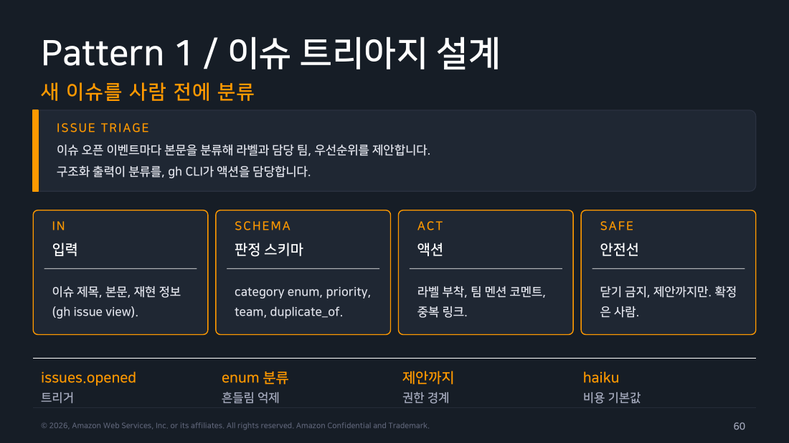
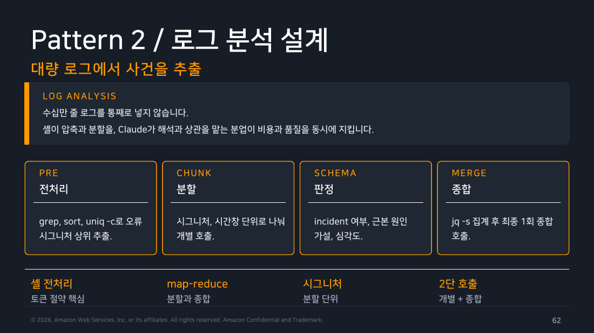

Part 6 — 자동화 패턴¶
한 줄 요약¶
좋은 자동화는 프롬프트를 복제하지 않고, 입력 수집·호출·검증·전달이라는 같은 골격을 재사용합니다.
왜 알아야 하나¶
매번 셸 한 줄을 늘리면 비용과 실패 처리가 흩어집니다. 반복 업무마다 모델은 달라도, 데이터가 들어와 정책을 통과한 결과가 전달되는 흐름은 같습니다.
1. 다섯 패턴은 같은 뼈대를 공유한다¶
이슈 하나가 저장소에 올라왔다고 합시다. 제목은 "결제 화면에서 500 에러", 본문은 사용자가 재현 절차를 두 줄 적어 둔 게 전부입니다. 사람이 이걸 처리하는 순서는 뻔합니다. 읽고, 버그인지 문의인지 정하고, 급한지 아닌지 정하고, 어느 팀 소관인지 고릅니다. 자동화도 하는 일은 똑같습니다. 이 제목과 본문을 입력으로 넣으면 {"type":"bug","severity":"high","area":"payments"} 같은 모양이 고정된 답이 나오고, 스크립트는 그 값을 그대로 라벨과 담당자로 옮깁니다.
여기서 결정적인 건 답이 자유 문장이 아니라 미리 정해 둔 값 중 하나라는 점입니다. type은 bug·question·feature 셋 중 하나만 나오게 하고, severity도 마찬가지로 목록을 못 박습니다. 이렇게 "가능한 값의 목록을 미리 고정해 두는 것"을 enum이라고 부릅니다. 목록 밖의 값이 나오면 스크립트가 그 자리에서 거를 수 있으니 뒷단에서 모델이 쓴 문장을 짐작해 가며 파싱할 일이 사라집니다. 그리고 들어온 일감을 이렇게 분류해 우선순위와 담당을 붙이는 작업을 트리아지(triage)라고 합니다 — 응급실에서 환자를 중증도로 나누는 그 말입니다.
나머지 네 패턴은 이 골격의 변주일 뿐입니다. 입력을 모으고, 정해진 형식으로 답을 받고, 그 답을 검사한 뒤, 다음 단계로 넘깁니다. 달라지는 건 무엇을 넣고 어떤 항목을 고정된 형식으로 받느냐뿐입니다.
- 로그 분석: 제한된 시간창의 로그를 넣고, 원인 후보와 다음에 확인할 관측을 분리해 받습니다.
- 일일 보고: 여러 JSON 결과를 넣고, 비용·상태·요약으로 집계해 받습니다.
- 문서 파이프라인: 원문을 넣고, 초안·검수·발행 후보로 나뉜 구조를 받습니다.
- 배치 마이그레이션: 항목 하나가 아니라 수백 개를 같은 호출로 돌립니다. 항목 단위 결과를 저장해 재시도와 부분 실패를 관리하는 게 관건이고 이건 §3에서 따로 다룹니다.

▲ 교재 슬라이드 60 — Pattern 1 / 이슈 트리아지 설계

▲ 교재 슬라이드 62 — Pattern 2 / 로그 분석 설계
2. 호출 함수는 정책의 한곳이다¶
패턴을 늘리는 가장 흔한 방식은 스크립트를 하나씩 더 만드는 것입니다. 그러다 이런 일이 납니다. 트리아지 스크립트에는 --max-budget-usd로 상한을 걸어 뒀는데, 두 달 뒤 급하게 만든 로그 분석 스크립트에는 그게 빠져 있습니다. 평소보다 로그가 열 배 들어온 날, 상한 없는 쪽만 조용히 비용이 튑니다. 실패한 응답의 원본을 남기는 코드도 어떤 스크립트엔 있고 어떤 스크립트엔 없습니다.
빠뜨리지 않는 방법은 정책을 각 스크립트가 아니라 한 군데에 두는 것입니다. 공통 run_claude에는 출력 형식, schema, timeout/재시도 정책, --max-turns, --max-budget-usd, raw JSON 저장 위치를 둡니다. 호출자는 “어떤 입력과 어떤 정책”만 제공합니다. 새 패턴을 만들 때 안전장치를 기억해서 붙이는 게 아니라, 이 함수를 쓰는 순간 자동으로 딸려 오게 만드는 것입니다. 이렇게 해야 한 패턴의 비용 보호가 다른 패턴에서 빠지지 않습니다.
flowchart LR
A["입력 수집"] --> B["run_claude\n상한·도구·스키마"]
B --> C["raw JSON 보관"]
C --> D["jq -e 정책 검사"]
D --> E["전달 / 재시도 / 실패"]
style A fill:#e3f2fd,stroke:#1976d2,color:#000
style B fill:#fff3e0,stroke:#ef6c00,color:#000
style C fill:#f3e5f5,stroke:#7b1fa2,color:#000
style D fill:#e8f5e9,stroke:#388e3c,color:#000
style E fill:#e3f2fd,stroke:#1976d2,color:#0003. 배치는 멱등성과 체크포인트가 먼저다¶
500건짜리 마이그레이션을 돌렸는데 499번째에서 네트워크가 한 번 끊겼다고 합시다. 스크립트가 통째로 죽으면 손에 남는 건 "실패했다"는 사실 하나뿐이고, 다시 돌리면 이미 잘 끝난 498건을 처음부터 또 호출합니다. 시간도 비용도 두 배가 되고 대상 시스템에는 같은 변경이 두 번 들어갑니다. 배치에서 무서운 건 실패 자체가 아니라 실패한 뒤에 되돌아갈 지점이 없다는 것입니다.
그래서 두 가지를 먼저 깔고 시작합니다.
- 체크포인트: 항목 하나를 끝낼 때마다 그 결과를 항목별 파일로 남기는 것입니다. 입력 ID·결과·재시도 횟수를 같이 적어 두면 어디까지 갔다가 끊겼는지가 파일 목록만 봐도 드러나고 처음이 아니라 끊긴 자리에서 이어서 시작할 수 있습니다.
- 멱등성: 같은 입력으로 몇 번을 다시 돌려도 결과가 달라지지 않는 성질을 말합니다. 거창해 보이지만 실제로는 "출력이 이미 있으면 그 항목은 건너뛴다"는 한 줄로 대개 충족됩니다. 체크포인트가 남긴 파일이 곧 건너뛸 근거가 되니 둘은 짝으로 움직이고 재실행 비용과 중복 쓰기도 함께 줄어듭니다.
여기에 하나 더, 대상 시스템에 실제로 쓰기 전에는 dry-run — 진짜로 쓰지 않고 "무엇을 바꿀 것인가"만 출력해 보는 실행 — 이나 사람 승인을 한 단계 둡니다. 잘못 들어간 500건을 되돌리는 것보다 500건짜리 계획서를 한 번 읽는 쪽이 언제나 쌉니다.
현장 메모
운영에서 중요한 것은 “몇 건 성공”보다 “어느 입력이 어느 프롬프트·모델·세션으로 실패했나”입니다. raw JSON을 버리지 않는 이유입니다.
직접 해보기¶
실행 환경: macOS 26.6.2 / Claude Code 2.1.251 / jq 1.7.1-apple / 2026-08-29.
앞선 파트에서 실제로 돌린 세 번의 --output-format json 호출 결과를 data/run-{1,2,3}.json으로 남겨 두고 교재 Lab 3의 집계 흐름을 그대로 태워 봤습니다.
$ jq -r '[.session_id, .num_turns, .duration_ms, .usage.output_tokens, .total_cost_usd] | @csv' data/*.json
"3bac2935-46cc-4cfa-9e80-403350ca5504",3,6471,319,0.020391
"d9b6f939-c021-4edd-9569-16fd15315f07",4,12257,432,0.026938400000000005
"4cb5142c-9269-4e2a-95d5-f86efbdcd99f",3,10776,685,0.033428
$ jq -s 'map(.total_cost_usd) | add' data/*.json
0.08075740000000001
어느 입력이 어느 결과를 냈는지 붙이려면 input_filename을 씁니다. 그런데 여기서 교재가 짚은 위험이 실제로 재현됐습니다.
$ jq -r '[input_filename, .num_turns, .total_cost_usd] | @csv' data/*.json
"data/run-1.json",3,0.020391
"data/run-2.json",4,0.026938400000000005
"data/run-3.json",3,0.033428
$ jq -s -r '[input_filename] | @csv' data/*.json
"data/run-3.json"
직접 해보고 알게 된 것
input_filename은 slurp(-s)과 같이 쓰면 무너집니다. 파일별로 도는 기본 모드에서는 세 줄이 각자 제 파일 이름을 달고 나오지만 -s로 전부 한 배열에 모으고 나면 “읽던 파일”이라는 개념이 이미 끝난 뒤라 마지막 파일 이름 하나만 남습니다. 합계를 내려고 무심코 -s를 붙였다가 출처 라벨이 전부 같은 값으로 찍히는 식으로 조용히 틀어집니다. 집계와 라벨링은 한 번의 jq로 합치지 말고 라벨링은 기본 모드로 먼저 뽑고 합계는 따로 내는 편이 안전합니다.
흔한 오해 바로잡기¶
"패턴화하면 프롬프트가 획일적이어야 한다" — 아닙니다. 공통화 대상은 실패·비용·보관·게이트이며, 업무별 판단 기준과 schema는 달라야 합니다.
정리¶
자동화는 모델 답변을 이어 붙이는 일이 아니라 입력 수집·호출·검증·전달이라는 같은 골격을 반복하는 일입니다. 이 골격을 고정할수록 새 패턴도 안전하게 늘어납니다.
출처¶
- Claude Code Deep Dive Workshop — Chapter 5 / Part 6: 자동화 패턴 (슬라이드 60~70)
- 공식 문서: CLI reference